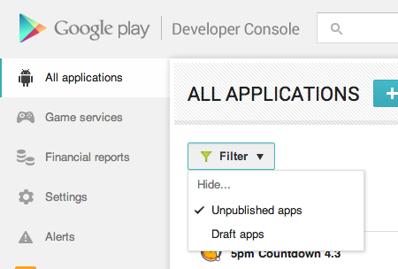
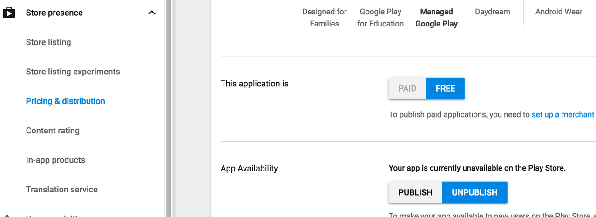

How to remove application from app listings on Android Developer Console
Is there any way to unpublish and then permanently remove an application from the list of applications on Android Developer Console?
Answer
No, you can unpublish but once your application has beenlive on the market
you cannot delete it. (Each package name is unique and Google remembers all
package names anyway so you could use this a reminder )
The "Delete" button only works for unpublished version of your app. Once you published your app or a particular version of it, you cannot delete it from the Market. However, you can still "unpublish" it. The "Delete" button is only handy when you uploaded a new version, then you realized you goofed and want to remove that new version before publishing it.
A reference
Update, 2016
you can now filter out unpublished or draft apps from your listing.

Unpublish option can be found in the header area, beside PUBLISHED text.

UPDATE 2020
Due to changes in the new play console, the unpublish option was moved to a
different location as follows.
Click All Apps in the left pane. Then click the app you want to remove.
Then under the Setup option in the left pane, Click Advanced Settings.
Then under App Availablity on the right, change the status to UnPublished
and click Save Changes at the bottom.
Take a look at the image below:
Suggest
Select Store Presense then Pricing Distribution and select Unpublish from App Availability. 
Google's help for this is here: https://support.google.com/googleplay/android- developer/answer/113476#unpublish (as of Feb-2020)